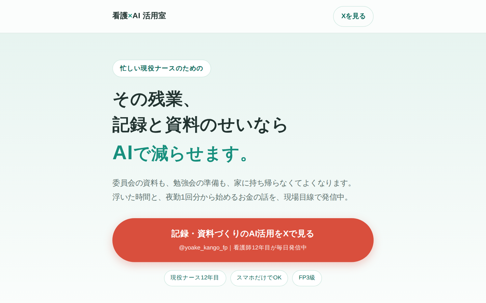
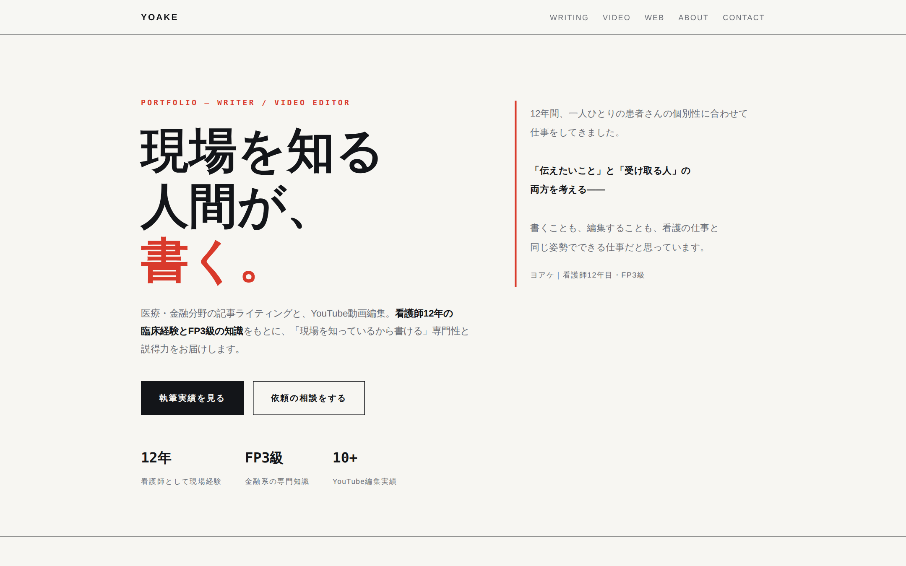

自主制作看護×AI活用室（集客LP）
現役看護師向けの集客ページ。ペルソナ設計・媒体リサーチから構成・コピー・実装まで。
PORTFOLIO — WRITER / VIDEO EDITOR
医療・金融分野の記事ライティングと、YouTube動画編集。看護師12年の臨床経験とFP3級の知識をもとに、「現場を知っているから書ける」専門性と説得力をお届けします。
文字単価 2円/初稿まで 3日/月 10本 まで
内容・分量により変動します。条件の詳細を見る
12年間、一人ひとりの患者さんの個別性に合わせて仕事をしてきました。
「伝えたいこと」と「受け取る人」の両方を考える——
書くことも、編集することも、看護の仕事と同じ姿勢でできる仕事だと思っています。 ヨアケ｜看護師12年目・FP3級
WRITING
医療とお金は、書き手の経歴がもっとも問われる領域。臨床12年の現役看護師×FP3級という経歴を明示して書けるのが、いちばんの強みです。
下の記事はすべて全文を公開しています。文体・構成・専門性の出し方を、そのままご確認ください。
専門知識のない読者に向けて、手順を「聞かれた順」に並べ替えて書いた実例。
記事を読む ↗音声入力での議事録作成を、守るべき線引きとセットで書いた実務記事。
記事を読む ↗経歴と執筆テーマを、読み物として成立させた自己紹介記事。
記事を読む ↗ほかの記事は note（@yoake_kango_fp）↗ でご覧いただけます。
VIDEO
テンポを意識したカット編集・テロップ・サムネイル制作まで一貫して対応。情報まとめ系・解説系コンテンツを中心に担当してきました。
YouTubeで再生 ↗ カット編集・テロップ・演出の実例をまとめています
情報まとめ系・解説系を中心に10本以上を担当。
視聴者が離脱しにくいテンポ重視のカット編集。
患者さん向け説明動画の制作を病院の業務として正式に担当。
分かりやすさが求められる題材が得意。
Photoshopでのサムネイル制作もあわせて対応。
クリックされる入口までセットで設計。
WEB
記事だけでなく、読ませて動かすページごとお任せいただけます。ペルソナ設計・構成づくりからコピーライティング・デザイン・実装・公開まで、一人で完結します。

自主制作現役看護師向けの集客ページ。ペルソナ設計・媒体リサーチから構成・コピー・実装まで。

自主制作いまご覧いただいているこのサイト自体が制作例です。戦略設計からデザイン・実装・公開まで。
SERVICES
医療・金融の専門性が要る記事から、LP・サイト制作、動画編集、AIでの画像素材づくりまで。
ひとりに頼める範囲が広いのが強みです。
現場を知っているからこそ書ける、専門的で説得力のある内容が強みです。
文章とページをセットで設計します。原稿を渡して終わりではなく、載せる場所まで含めてお任せいただけます。
ビジネス系・解説系が得意。
制作者さんの意図を汲み、YouTubeならではのテンポの良い編集で仕上げます。
MidjourneyとにじJourneyで200枚以上の生成経験。フリー素材で見つからない画像を、動画・記事の素材として用意できます。
HOW I WORK
外注で不安なのは
「納期」と「連絡が取れるか」だと思います。
そこを最優先にしています。
スケジュールから逆算して制作し、間に合わないものは最初から引き受けません。
発注者さんが不信感や焦りを感じないよう、区切りごとに状況をお伝えします。
量産はしません。記事も動画も、一本ごとに時間をかけて仕上げます。だから同時進行の本数は絞っています。
内容をお聞かせいただければ、
対応可否と進め方をすぐにご返信します。
ESTIMATE — ご依頼の目安
記事の内容・分量によって前後します。まずはご相談ください。
| 稼働時間 | 平日 2〜4時間程度 |
|---|---|
| 連絡可能時間 | 平日 8:30〜23:00 ／ 休日 10:00〜23:00 |
| 執筆の納品形式 | Word／Google ドキュメント／Markdown（ご指定の形式に合わせます） |
| 使用ソフト | Adobe Premiere Pro／Adobe Photoshop |
ABOUT
リサーチの下調べや構成の壁打ちにはAIを使います。制作のスピードは、そのぶん上がります。
ただし、事実確認と本文は人間が書きます。医療と金融は、間違えたときに読者が実際に損をする分野だからです。数字・制度・用語は一次情報にあたって確認しています。
「AIに書かせただけの原稿は困る」という前提でご依頼いただいて大丈夫です。原稿を生成物のまま納品することはありません。（画像素材の生成は別途、用途をご相談のうえ対応します）
CONTACT
ご質問やご依頼など、お気軽にお問い合わせください。まずは内容だけでもお聞かせいただければ、対応可否・進め方をすぐにご返信いたします。
下のアドレスをクリックすると、記入項目を入れた状態でメールが開きます。